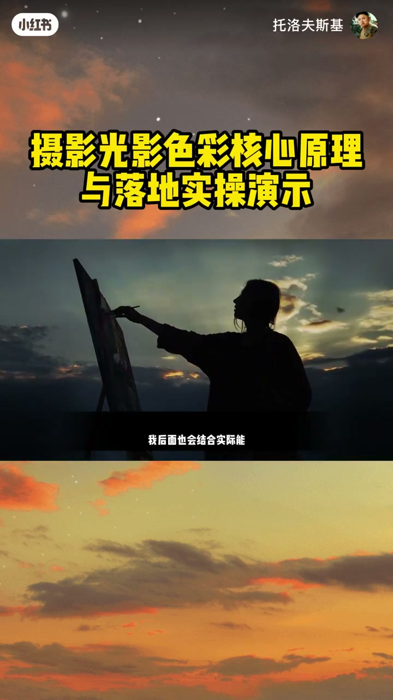
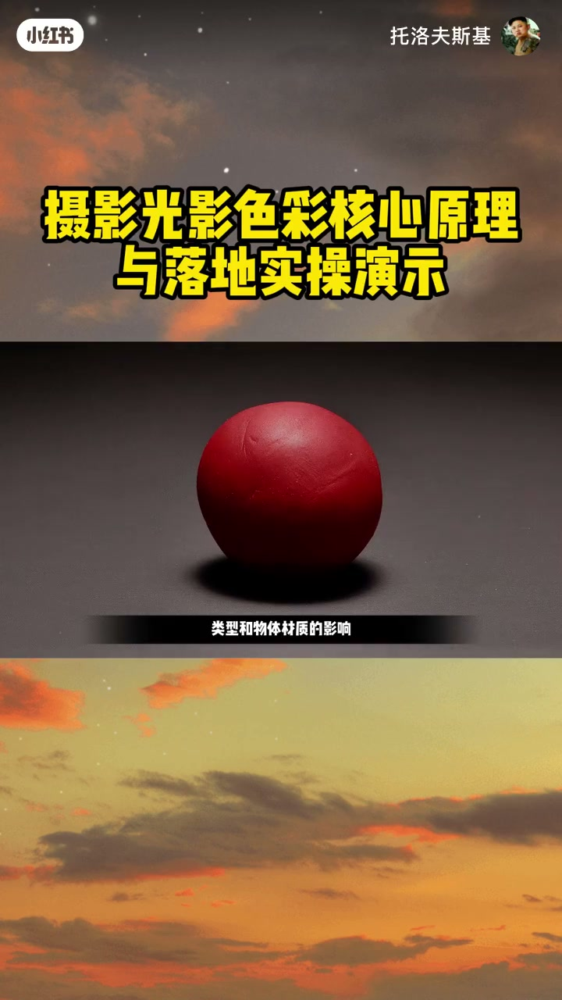
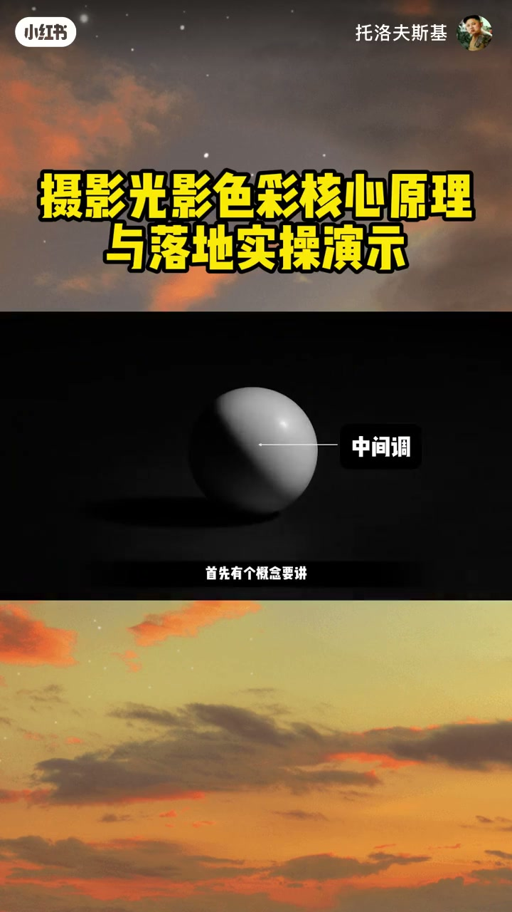
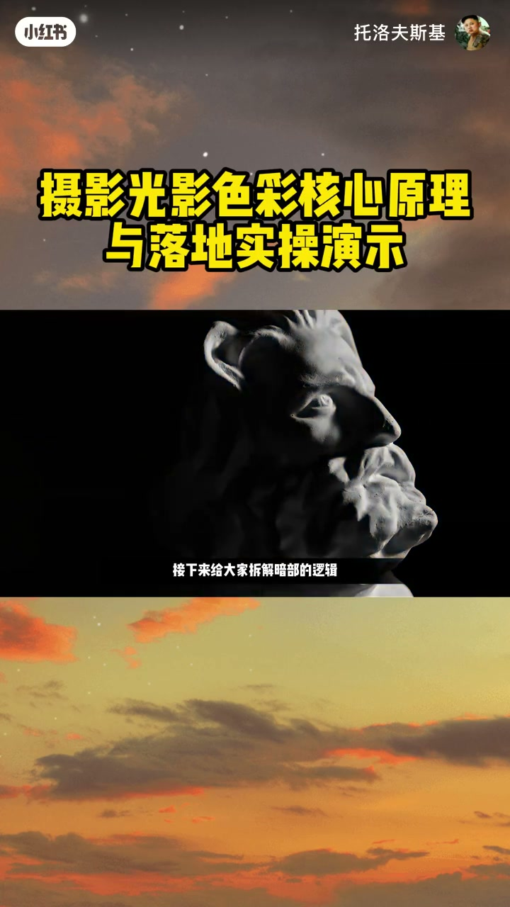
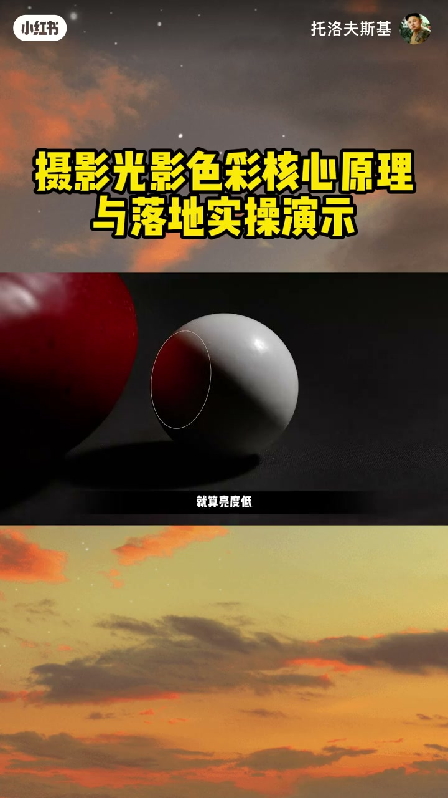
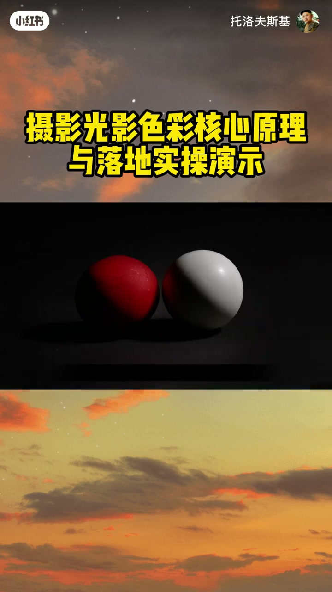
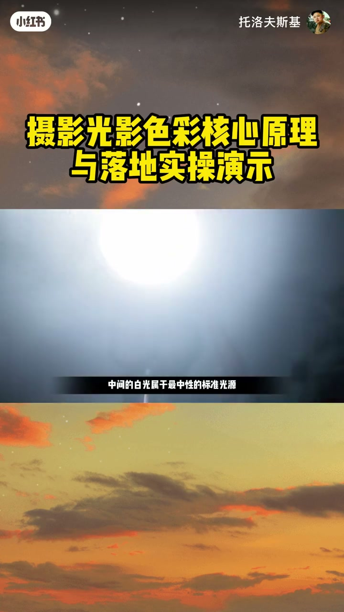
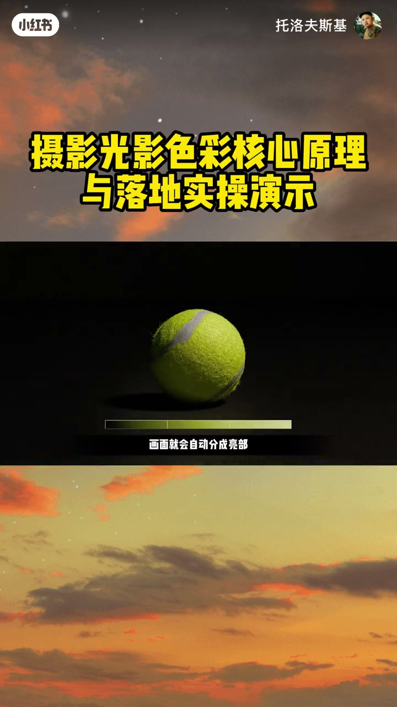
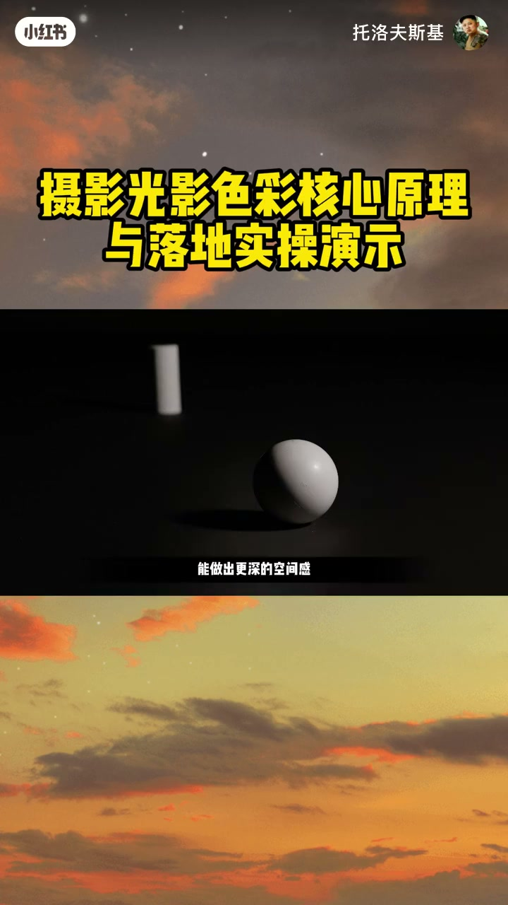
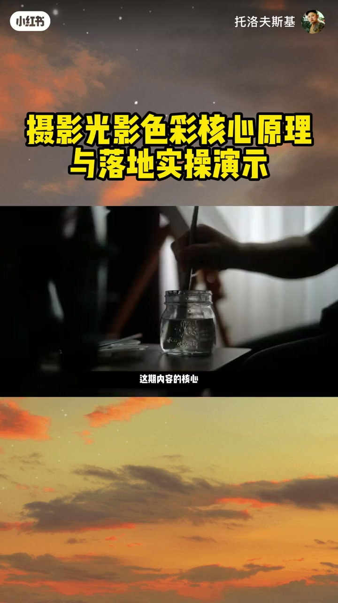

内容要点
「吃透光影色彩摄影底层原理实拍落地全套实操」教程要点：很多朋友学光影色彩都习惯死计固定参数 → 其实搞懂核心原理后完全可以按需调整 → 甚至突破常规规则 → 咱今天直接从光线落在物体上的实际呈现逻辑讲起；详见正文。
知识结构
很多朋友学光影色彩都习惯死计固定参数
接下来给大家拆解暗部的逻辑
也叫tint
- 很多朋友学光影色彩都习惯死计固定参数
- 其实搞懂核心原理后完全可以按需调整
- 甚至突破常规规则
- 咱今天直接从光线落在物体上的实际呈现逻辑讲起
- 很多朋友可能会问
很多朋友学光影色彩都习惯死计固定参数
00:00–04:36很多朋友学光影色彩都习惯死计固定参数
很多朋友学光影色彩都习惯死计固定参数；其实搞懂核心原理后完全可以按需调整；甚至突破常规规则；咱今天直接从光线落在物体上的实际呈现逻辑讲起；很多朋友可能会问；为啥要花时间学这些理论知识；其实就是为了咱们能在吃透规则的基础上灵活调整；想要用不一样的方式呈现画面；就得先把原理摸透了再用；能把光和色的原理串联起来灵活运用；才算真正会把控画面色彩；咱先从最基础的光线落到物体上的呈现形式讲起；今天的理论内容大家不用死计术语；懂运作逻辑就行；我后面也会结合实际能用的方法给大家拆解；首先光线落到物体上；最先看到的就是朝向光源的亮面；这个正对着光源的面；我们叫它主光面；也叫中心光；顾名思义；就是光线最直接照射到的区域；是物体呈现形态的部分里亮度最高的地方；观察主光面能帮我们判断光源的大小、距离还有位置；根据主光面的亮度、面积、纹理；就能推测出境外光源的类型、距离和强度；我个人觉得主光面能传递的最核心信息就是光源的位置；咱们看主光面的角度；就能轻松猜出光源大概在哪个方向；别看这好像不起眼；光源位置不一样；光线的占比与浓度都会变；连带着阴影的长度、深度也会有差异；这里就有了光影色彩调整的空间；换句话说；搞懂光源位置；就能顺着光色的走向给画面做节奏设计；预判光源位置是让画面层次变丰富的第一步；主光面还有个特点；光线照射越强的区域；色彩会越浅；物体在接近自然的环境里呈现出的基础颜色；我们叫它固有色；比如香蕉是黄色的；树叶是绿色的；就是我们想到这个物体第一反应的颜色；当然这个会受光源类型和物体材质的影响；但在光线直射的亮部；物体的固有色会被冲淡；最后会偏向无彩色的状态；所以哪怕是主光面；也要注意亮部最亮的区域和亮度饱和区域的色彩变化差异；讲完主光面；接下来是高光；高光和主光面不一样；它更接近点状；不是面状的；是光线在物体表面反射后进入人眼的那个点；只有反射角度刚好对上的时候才会出现；高光的形态会随物体材质变化；和物体质感的关联度很高；像玻璃、金属这种表面光滑的材质；高光会更强烈；边缘更锐利；布料、陶土这种相对粗糙的哑光表面；高光要么很少出现；要么范围大；边缘模糊；就算出现；高光的范围也不会太大；亮度相对也更低；高光和主光面的核心区别是；高光会直接保留光源本身的颜色；主光面是把物体的固有色提亮；之后慢慢变灰；但高光不管物体本身是什么颜色；都会直接反射光源的色彩；所以大家别觉得高光就一定是亮白色；它和物体材质、光源颜色关联度很高；是我们判断场景质感、空间感的重要参考；接下来是中间调部分；首先有个概念要讲；把光影边界清晰分开的那条线；叫明暗交界线；也叫中指线；对比边界线；以这条对比边界线为基准；向主光面过渡的中间区域就是中间调；中间调的范围会随场景变化；通常是物体形态和色彩呈现最清晰的区域；有时候暗部反射的反光；也会被包含在中间调的范围内；亮部的色彩会被冲淡；暗部的色彩会被压暗；相比之下；中间调的物体形态、颜色、质感都最饱满；咱们拍人像的时候；人物皮肤通常都在中间调区域；所以中间调的亮度结构设置特别重要；另外物体的体积感也是由中间调决定的；中间调的占比越多；形态就越柔和；层次越丰富；中间调占比越小；形态就越锐利；轮廓越硬朗；这个用文字说可能有点抽象；为大家分享我平时看画面；或者实景的时候用的判断方法；你可以把光想象成要向外扩散的团块；阴影是向内收缩的团块；中间调就是连接这两个团块的缓冲带；根据这个缓冲带的宽度和位置；就能判断出场景的风格特点；在视频影像领域；这个叫影调调整；咱们做影调调整；划分亮度层级的时候；中间调就是核心的参考区域；讲完中间调



04:34–08:49接下来给大家拆解暗部的逻辑
接下来给大家拆解暗部的逻辑；通常大家都统成暗部；但我会把它分成暗部和阴影两部分方便理解；要讲清楚它们的特点；就得引入环境光和反射光两个概念；我个人觉得把这四个概念串联起来；理解很有必要；咱们眼睛看到的所有东西；其实都算光源；哪怕不像太阳灯光那样自己发光；所有受光后反射光线的表面；都会向周围再发射光线；蓝天；树叶；白墙；地面的瓷砖；空间里所有我们没注意到的表面；其实都在互相反光；我们自己不会像光源那样主动发光；但能被清晰看到；就是因为这个反射原理；反射光就是光源发出的光线；先被周围物体反射一次；再落到被射物体上的二次光线；给大家举个例子；把白球放在红球旁边；白球靠近红球的一侧会泛出红色；还有人坐在草地上；脸上会泛出绿色的光；这都是典型的反射光效果；反射光和环境光的核心区别是；反射光的作用更直接；环境光是整个空间里；慢进来的柔和光线；而反射光是有明确方向；直接打到暗部的光线；所以它比环境光强度更高；色彩也更清晰；暗部里反射光到达的区域；就算亮度低；饱和度也是最高的；刚才说主光面的色彩会被光线冲淡；但是暗部的反射光会把光源颜色；和物体固有色清晰的融合在一起；所以虽然在暗部；很多时候我们会把这个区域；当做类似中间掉的核心区域来用；把反射光的逻辑吃透；就能更丰富的涉及画面的色彩；从中间掉过渡到暗部的这个区域；是不同亮度不同色彩的光源；共同作用的结果；是整个画面里层次最丰富；色彩最多样的区域；也是我们可以灵活调整色彩的核心区域；讲到这里就可以给大家说；亮度分组的技巧了；广义上也叫对比法；这个方法不难；亮度分组就是把整个场景；分成亮部中间掉暗部三个部分；把亮度分成三个层级；不仅能高效理解光线逻辑；还能帮咱们规划画面的对比度和色彩；现在咱们知道了光影的大致特点；就可以再深入一层梳理；亮部是咱们判断光源位置和方向的依据；是打造光色节奏的起点；中间掉是物体色彩和质感呈现最清晰的区域；暗部的色彩则是由环境光和反射光；共同形成的；大家平时观察光线的时候；就可以顺着这个思路去看；刚才给大家拆解了光影的特点；现实世界里还有丰富的色彩；接下来咱讲光影色彩的核心概念；首先是色温的概念；色温的解释有很多；咱们这里就把它当做定义光源色彩的概念来理解；这个概念咱们平时也能用到；同样是白色的纸；在蜡烛光下和荧光灯下看起来完全不一样；也就是说白色的呈现效果会随光源类型变化；色温就是用来衡量色彩偏暖还是偏冷的标准；说得更细一点；光源的色彩有冷色也有暖色；我们可以通过色温准确区分这种细微的差异；物理上色温是从黑体辐射现象推导出来的；这个术语大家完全不用记；懂运作逻辑就行；简单说就是物体受热的时候；发出的光的颜色会变化；温度越高光色变化对应的数值就是色温；大概1000度的时候；灵火的光成红色；温度更高的荧光灯；光色会从橙色变到黄色；温度超过5000度的时候；光色会变成白色；这个温度和太阳表面的实际温度差不多；要是温度升到8000度以上；比如蓝色恒星或者湖光的光；就会变成蓝色；不过咱们日常使用的时候；色温越低；光感越暖；色温越高；光感越冷；根据这个规律；大家就能判断场景的色彩是偏暖还是偏冷；也能用来给画面赋予不同的情绪；中间的白光属于最中性的标准光源；不会偏向某一侧；是物体固有色呈现最准确的色温；我刚开始学的时候；会把黄和蓝放在横轴上；用来判断场景的色温；纵轴我会放上绿色和阳红色；通过这个十字坐标来梳理概念；这个纵轴就是色调偏移



08:48–13:04也叫tint
也叫tint；咱简单说一下色调偏移；日常自然光里很难出现偏绿或者偏阳红的光线；基本是不可能的；阳红色本来就是光谱里不存在的颜色；所以色调偏移是用来判断光线纯净度；或者偏色程度的标准；色调偏移越接近中心；光线越接近纯白色；越往某一个方向偏；场景的特定意图和情绪就越浓；绿色是太阳光中占比较高的色彩成分；但因为各种颜色混合在一起；所以我们看到的是白色；如果光源偏绿；会营造出怪异焦虑的感觉；或者复古人工的氛围；如果偏向阳红色；就能唤起活泼浪漫；明亮有戏剧感的情绪；如果说色温决定了场景的冷暖感；色调偏移就是在这个基础上；叠加其他情绪和概念的第二轴；刚才给大家梳理了基础的理论内容；现在讲几个能落地到实际拍摄的技巧；第一个是对比的打造方法；只要有光影；画面就会自动分成亮部；中间调 暗部三个层级；这三个区域的占比和分布位置；决定了场景的重量感和风格；另外中间调里饱和度最高的色彩；会随着亮度提升被冲淡；高饱和色彩在向灰度过度的区域；也能形成对比；这种对比不仅能用在明暗对比上；也能用在背景 主体；不同物体之间的关系处理上；第二个技巧是利用色彩差异；搭配成熟的调色思路；我之前也出过调色相关的内容；大家可以自行参考；常见的时操思路是给暖光；搭配冷调阴影；黄光和蓝光是互补色；能在明暗对比之外；再做出色彩对比；核心是要想清楚；有亮部 中间调 暗部；分别要自然融入什么颜色；比较便捷的参考路径是；去看印象派画家的作品；他们对光影色彩的处理；比照片电影里的表达更深入；大家可能也发现了；我刚才的讲解是按照；色彩三要素的顺序来的；亮度对比 饱和度对比 色彩对比；理论上我是把它们分开讲的；但大家实际看场景的时候；可以练习同时读取；这三个要素的变化；第三个技巧是空间透视感的打造；通常我们靠物体大小就能做出透视感；但如果结合对比和色彩；能做出更深的空间感；我们周围的空气不是完全透明的；物体离得越远；中间隔的空气越多；对比度就越低；色彩也会越模糊；利用这个规律做对比；就能最大化空间透视感；天空是蓝色的；背景基本是统一的色调；我们会把太阳光的白色和蓝色做对比；自然形成前后的层次反差；所以冷色调看起来会往后退；暖色调看起来会往前凸；不过核心是相对性；不是说必须把某个颜色放在后面；才能做出深度；而是要利用前后物体之间的对比；和色彩的细微差异来调整；最后给大家讲；怎么用光影色彩给场景做节奏设计；这个方法很直接；首先先判断场景里亮部；中间调暗部哪个站的面积最大；这样就能知道该怎么重新分配光影权重；把重点放在想要突出的部分；接下来判断光线的核心作用是什么；决定你想要观众视线停留最久的受光区域是哪里；把这个区域的细节做丰富；剩下的区域可以适当弱化细节；做松弛处理；场景里的节奏设计；就是在光影划分的基础上；设计色彩的走向；让观众的视线能自然流动；大家把刚才讲的这些概念混合起来用；就能轻松做出视线流动的逻辑和色彩节奏；这期内容的核心是让大家理解光的结构；然后在这个基础上做色彩设计；还原或者重构你想要呈现的世界；最后再回到最开始的问题；为啥要学这些理论原理；其实就是为了能灵活突破这些规则；想要用不一样的方式呈现画面；就得先把原理摸透了再灵活运用；刚才的内容里；我为了讲清楚理论；把光和色分开说了；咱们日常拍摄的时候不用刻意拆分；能把光和色的原理串联起来；灵活运用才算真正会把控画面色彩；你平时实拍前会先分析场景的光影色彩结构；再调整参数吗；评论聊聊你的时操习惯




口述/画面要点（40段）
结合 Whisper medium 与画面大字整理；专有名词已校对。
很多朋友学光影色彩都习惯死计固定参数
其实搞懂核心原理后完全可以按需调整
甚至突破常规规则
咱今天直接从光线落在物体上的实际呈现逻辑讲起
很多朋友可能会问
为啥要花时间学这些理论知识
其实就是为了咱们能在吃透规则的基础上灵活调整
想要用不一样的方式呈现画面
就得先把原理摸透了再用
能把光和色的原理串联起来灵活运用
才算真正会把控画面色彩
咱先从最基础的光线落到物体上的呈现形式讲起
今天的理论内容大家不用死计术语
懂运作逻辑就行
我后面也会结合实际能用的方法给大家拆解
首先光线落到物体上
最先看到的就是朝向光源的亮面
这个正对着光源的面
我们叫它主光面
也叫中心光
顾名思义
就是光线最直接照射到的区域
是物体呈现形态的部分里亮度最高的地方
观察主光面能帮我们判断光源的大小、距离还有位置
根据主光面的亮度、面积、纹理
就能推测出境外光源的类型、距离和强度
我个人觉得主光面能传递的最核心信息就是光源的位置
咱们看主光面的角度
就能轻松猜出光源大概在哪个方向
别看这好像不起眼
光源位置不一样
光线的占比与浓度都会变
连带着阴影的长度、深度也会有差异
这里就有了光影色彩调整的空间
换句话说
搞懂光源位置
就能顺着光色的走向给画面做节奏设计
预判光源位置是让画面层次变丰富的第一步
主光面还有个特点
光线照射越强的区域